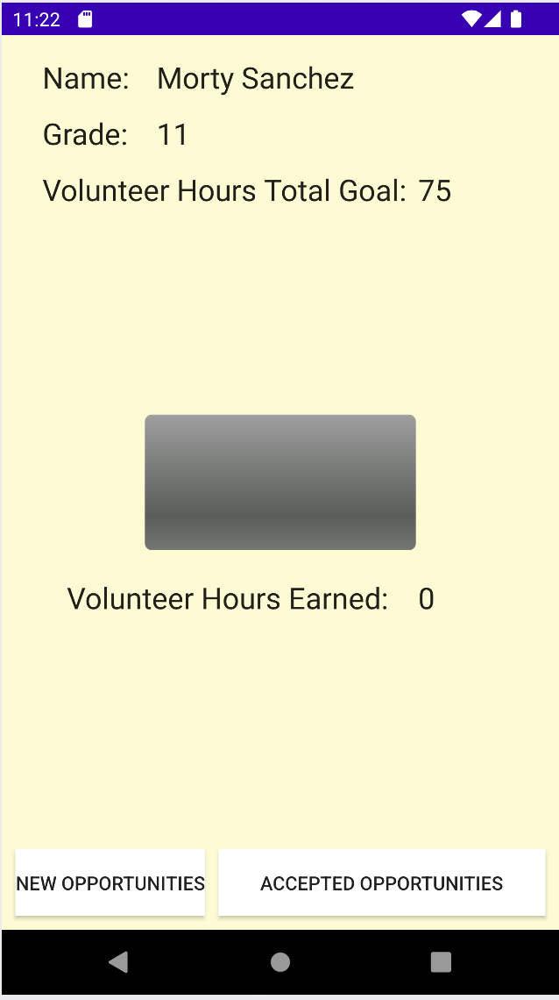
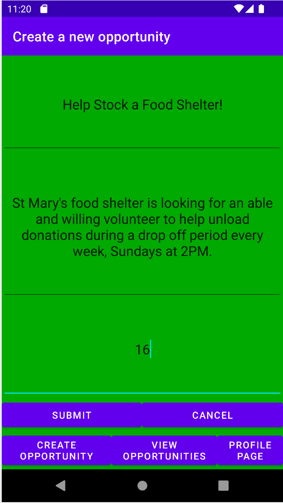

| Community Service Tracker | |
| External link to .apk download | |
| External link to source zip | |
| Community Service Tracker facilitates the fufillment of service hour requirments for PG county high school students. Organizations can create accounts then post opportunities for students to see. Students can create accounts then browse and commit to service opportunities while keeping track of progress towards their hour requirments. | |
|  |  |
| Link to demonstration video | |
| External libraries used: com.google.firebase | |